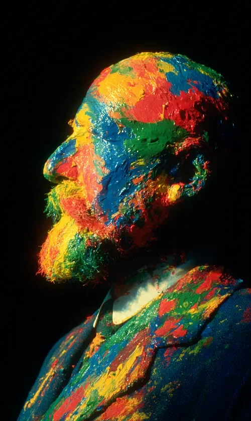

김 씨는 맞은편에 앉은 여자의 눈동자가 경련하는 것을 못 본 척하며 메뉴판을 고쳐 잡았습니다.
Mr. Kim pretended not to notice the twitching in the eyes of the woman sitting across from him as he readjusted his grip on the menu.
손가락 사이에서 진득한 노란색 유채 물감이 스파게티 소스처럼 테이블보 위로 툭 떨어졌습니다.
A glob of thick yellow oil paint dripped from between his fingers onto the tablecloth like stray spaghetti sauce.
사십육 년 만의 외출이라 신경을 좀 썼는데 과유불급이었나 싶어 그는 넥타이를 만지작거렸습니다.
He toyed with his tie, wondering if he’d gone a bit overboard for his first outing in forty-six years.
목덜미에서 턱으로 흘러내리는 파란색 물감이 셔츠 칼라를 딱딱하게 굳히기 시작했습니다.
The blue paint streaming from his nape to his jaw began to harden his shirt collar into a stiff shell.
여자는 비명을 지르는 대신 떨리는 손으로 물잔을 들어 올렸으나 차마 마시지는 못했습니다.
Instead of screaming, the woman lifted her water glass with a trembling hand but couldn't bring herself to take a sip.
공기 중에는 낭만적인 향기 대신 코를 찌르는 휘발성 테레빈유 냄새가 진동했습니다.
Instead of a romantic fragrance, the pungent, stinging scent of volatile turpentine vibrated in the air.
그는 가장 자신 있는 미소를 지었지만 두꺼운 빨간 물감 층 때문에 입술은 꿈쩍도 하지 않았습니다.
He flashed his most confident smile, but his lips didn't budge at all beneath the thick layer of red paint.
오랜 침묵 끝에 그는 굳어버린 혀를 굴려 오늘 날씨가 참 원색적이지 않냐고 간신히 내뱉었습니다.
After a long silence, he rolled his stiffened tongue and managed to blurt out that the weather today felt quite "primary," didn't it?